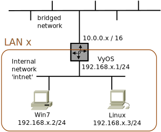

Networking
VyOS Router Worksheet
Add a Router to the LAN

In this worksheet you will add a third VM, a router, to your Local Area Network. This router connects your LAN to other LANs and is known as an edge router. It serves as a gateway to other LANs and possibly to the Internet, hence it is also sometimes known as a gateway router (and possibly some other names). From your LAN's point of view, it is the default router.
VyOS Router VM
Install and check out the VM.
-
To start, download the file vyos-1.1.7-amd64.iso from the course webserver (or browse to the URL http://vyos.net).
-
Run the command
virtualboxfrom the command line, or find the link from the start menu. - Click on "New" from the VM manager window. Name this machine "vyos-<number>", where "<number>" is the last number of your physical host's IP address (e.g. 106 or 118). Set the "Type" and "Version" as Linux, Debian 64-bit, and click on "Next >".
-
Set the Memory at 512 MB, and click on "Next".
Check "Create a virtual hard drive now", and click on "Create".
Check "VDI (VirtualBox Disk Image)", and click on "Next".
Check "Dynamically allocated", and click on "Next".
Set the virtual hard drive size to about 2 GB, and click on "Create".
-
Select your VyOS VM in the VM manager, and click on the "Settings" icon.
Choose the "Network" item in the dialog box.
-
You should see a tab labeled "Adapter 1" that is enabled (perhaps attached to NATNetworks).
Click on the drop-down box for this and select "Internal Network" instead. The network's name should come up as "intnet".
-
Click the tab labeled "Adapter 2".
- Check the "Enable Network Adapter" box.
-
Set it to be Attached to: "Bridged Adapter".
The name should come up the same as your physical host's network adapter (such as "p2p1" or "eth0" or "eno1").
- Choose the "Storage" item on the left.
-
Choose the "Empty" item under "Controller: IDE".
- Click on the "CD" icon under the Attributes section on the right. Select "Choose a virtual CD/DVD disk file..."
- Browse to where you saved the vyos .iso file. Double-click on it.
-
Click on "OK".
- Select your new VM in the VM manager, and click on Start. You should see a basic text-mode login. Login with username "vyos" and password "vyos" (sense a pattern here?)
-
At the command prompt, run the command
install image.It will ask a series of questions, and offer a default answer in [square brackets]. Press Enter to accept the defaults for most of the questions except the second "Continue" where the default is "No". Enter a "yes" for this question.
Name the image "router-x" (replace x with the last part of your physical host's IP address, for example "router-108" or "router-97").
Re-enter the password "vyos" twice.
-
Enter the command "poweroff".
-
Click on the "Settings" menu in the VM manager.
Choose "Storage", and select the vyos .iso line.
Click on the round "CD" icon in the Attributes panel on the right.
Click on "Remove disk from virtual drive".
Click on "OK".
-
Restart your vyos VM.
Press "Enter" twice, to boot the VM, or just wait for it.
Login, using account "vyos" and password "vyos".
You will probably see periodic messages about "error respawning...". It is safe to ignore them; you will turn them off in a later step.
-
In the VM, run the command:
ip addr show
You should see three interfaces: the loopback device "lo", with IP address 127.0.0.1, and the interfaces "eth0" and "eth1".
Does eth0 have an IP address? How about eth1?
-
In the following commands, replace the value "x" with the last part of your physical host's IP address.
Run the command:ip addr add 192.168.x.1/24 dev eth0
-
Repeat the command:
ip addr show
You should now see that eth0 has the desired address. -
Start one of your other VMs (Linux or Windows), and try pinging between it and this VyOS VM. You should be able to ping in both directions.
- Continue to the configuration, or shut off your VM.
Configure VyOS to manage your LAN.
The IP address set above only works temporarily. To properly configure VyOS you must run the "configure" mode, set items as needed, commit your configuration to memory, and save the configuration so that it returns after a reboot.
In the following steps, replace the value "x" with the last part of your physical host's IP address.
If your VM isn't already running, select your VyOS VM in the VM manager and click on "Start". Login to the router, using account "vyos" and password "vyos".
The following are adapted from http://vyos.net/wiki/User_Guide. Enter these commands:
-
Start the configuration:
configure
-
delete system console device ttyS0
(This will get rid of the error message about respawning too fast.)
-
Configure the internal LAN interface:
set interfaces ethernet eth1 address '192.168.x.1/24' set interfaces ethernet eth1 description 'LAN'
-
Configure the interface to other routers:
set interfaces ethernet eth0 address '10.141.0.x/16' set interfaces ethernet eth0 description 'ROUTERNET'
Check your settings with the command:
show interfaces
-
Set up default, static, and RIPv2 routing.
Replace the x with your system's number — the last part of your physical IP address.
Replace the y and z with values one less than and one more than your own system number; for example, if your own system is 119 ("148.137.141.119"), then use 118 and 120. (The 119 system is the instructor's machine.)Lines beginning with "#" are comments — you can skip them (but read them for understanding).
-
Check your work again with the command:
show protocols
You should see a couple of static routes, to your immediate neighbors, and the RIP configuration with your immediate neighbors listed.
-
Configure a DNS forwarder to handle domain name lookups:
set service dns forwarding cache-size '0' set service dns forwarding listen-on 'eth0' set service dns forwarding name-server '10.141.0.1'
set service dns forwarding name-server '148.137.11.15' set service dns forwarding name-server '148.137.8.15'
-
Allow remote connection (more convenient than the console shell):
set service ssh port '22'
Finish up.
-
Apply the configuration:
commit
-
Save the configuration for future reboots:
save
-
... and quit:
exit
Test your Router
In the following steps, replace the value "x" with the last part of your physical host's IP address.-
Use your Linux and Windows VMs to run the command
ping 192.168.x.1. This will test your new router installation. -
Also from the clients, run the command
ping 10.141.0.x. This tests the router's ability to route to its external interface. - You should be able to ping your neighbors' clients and routers, as well. Try pinging one of your neighbor's VMs.
-
If the instructor's router is running, then you should be able to reach it, and the Internet.
From the client, run the command
ping 10.141.0.1. (If this doesn't work, the router may be down.)Then run the command
ping google.com. This tests your DNS configuration.